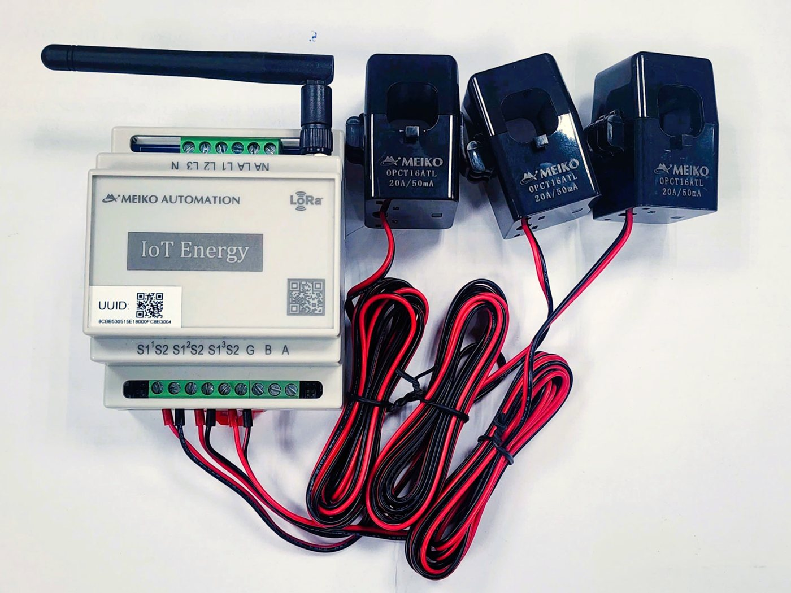

MESI-V1 Cảm biến IoT theo dõi dòng điện và trạng thái vận hành.
MESI-V1 là cảm biến IoT giám sát dòng điện thiết bị, dùng cảm biến CT và kết nối LoRa. Sản phẩm được mô tả cho các bài toán theo dõi năng lượng và trạng thái vận hành; cấu hình cụ thể cần được xác nhận.
Nội dung tạm: thông tin sản phẩm đang được hoàn thiện và cần xác nhận cùng đội kỹ thuật.

Điểm chính
- 01
Giám sát dòng điện
Theo dõi dòng điện thiết bị để hỗ trợ giám sát năng lượng và trạng thái vận hành.
- 02
Cảm biến CT
Hỗ trợ đo dòng điện qua cảm biến CT Clamp cho nhiều tải hoặc máy.
- 03
Kết nối LoRa
Dữ liệu được mô tả là truyền từ cảm biến qua LoRa đến gateway IoT.
Thông số kỹ thuật
Thông số được trích từ tài liệu kỹ thuật của Meiko. Dòng ghi "dự kiến" cần được xác nhận cùng đội kỹ thuật cho cấu hình cụ thể.
Ứng dụng
- Giám sát dòng điện máy móc và dây chuyền sản xuất
- Quản lý năng lượng cho nhà máy hoặc tòa nhà
- Theo dõi tải motor và phát hiện bất thường dòng điện
| Giao tiếp | LoRa | Thông số dự kiến — cần xác nhận |
|---|---|---|
| Tần số | 920.125–922.225 MHz | Thông số dự kiến — cần xác nhận |
| Kênh ADC | 4 channels, 12-bit | Thông số dự kiến — cần xác nhận |
| Giao diện | I2C / UART / RS485 | Thông số dự kiến — cần xác nhận |
| Nguồn cấp | 100–242 VAC | Thông số dự kiến — cần xác nhận |
| Nhiệt độ vận hành | -10–55 °C | Thông số dự kiến — cần xác nhận |
| Lắp đặt | DIN rail | Thông số dự kiến — cần xác nhận |
Sản phẩm liên quan
Cần cấu hình cho dự án của bạn? Trao đổi với đội kỹ thuật Meiko.
Yêu cầu tư vấn / báo giá